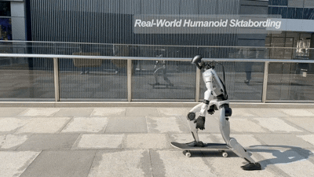
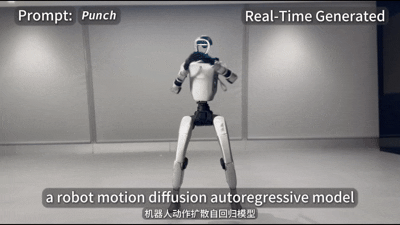
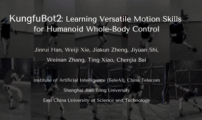
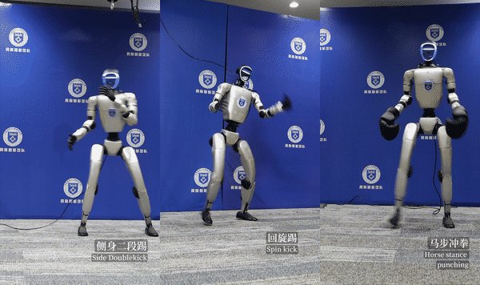

Jinrui Han韩金睿
Hi everyone! I am a first-year PhD student at MMLab@HKU (The University of Hong Kong), advised by Prof. Ping Luo. I also work closely with Dr. Chenjia Bai. My research focuses on humanoid robot whole-body control, learning and systems.
Previously, I received my M.Eng. & B.Eng. degrees from SJTU (Shanghai Jiao Tong University).
Email: jinrui.han [AT] connect.hku.hk
News
- 2026-10 Release LocoManiLab, NEXUS, and ROOF.
- 2026-04 HUSKY is accepted by RSS 2026.
- 2026-03 Invited talk at 具身智能之心.
- 2026-02 Release HUSKY, TextOp, and HumanoidSoccer.
- 2026-01 KungfuBot2 is accepted by ICRA 2026.
- 2025-10 Release KungfuBot2.
- 2025-09 KungfuBot is accepted by NeurIPS 2025.
- 2025-06 Invited talk at 深蓝学院 and OpenGRO.
- 2025-06 Release KungfuBot.
Projects
Preprint

TwoGether: Closed-Loop Planning and Control for Cooperative Humanoid Transportation
Preprint
TL;DR — Closed-loop planning and control for cooperative transportation with humanoid robots.
Preprint
LocoManiLab: A Unified Testbed for Data, Policies, Controllers, and Deployment in Humanoid Loco-Manipulation
Preprint
TL;DR — A unified testbed for humanoid loco-manipulation across 234 household tasks, integrating data collection, policy learning, whole-body control, and simulation-to-real evaluation.
RSS 2026

HUSKY: Humanoid Skateboarding System via Physics-Aware Whole-Body Control
TL;DR — A reinforcement learning–based whole-body control framework for stable and agile humanoid skateboarding.
CoRL 2026

TextOp: Real-time Interactive Text-Driven Humanoid Robot Motion Generation and Control
TL;DR — A real-time interactive text-driven framework for humanoid motion generation and control that supports streaming language commands.
ICRA 2026

KungfuBot2: Learning Versatile Motion Skills for Humanoid Whole-Body Control
TL;DR — A unified whole-body controller that enables humanoid robots to learn diverse and dynamic behaviors within a single policy.
NeurIPS 2025

KungfuBot: Physics-Based Humanoid Whole-Body Control for Learning Highly-Dynamic Skills
TL;DR — A physics-based humanoid control framework, aiming to master highly-dynamic human behaviors such as Kungfu and dancing.
* Equal contribution · § Co-project leaders · † Corresponding authors
Education
The University of Hong Kong
Ph.D. Student
2026.09 - Now

Shanghai Jiao Tong University
B.Eng. & M.Eng.
2019 - 2026